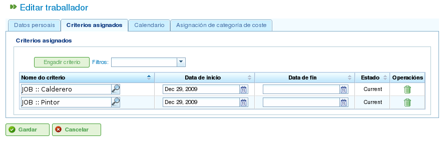
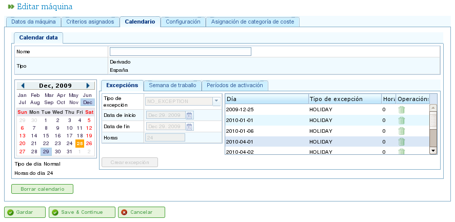

Resurshantering
Contents
Programmet hanterar två distinkta typer av resurser: personal och maskiner.
Personalresurser
Personalresurser representerar företagets medarbetare. Deras viktigaste egenskaper är:
- De uppfyller ett eller flera generiska kriterier eller medarbetarspecifika kriterier.
- De kan specifikt tilldelas en uppgift.
- De kan generiskt tilldelas en uppgift som kräver ett resurskreterium.
- De kan ha en standard- eller specifik kalender efter behov.
Maskinresurser
Maskinresurser representerar företagets maskiner. Deras viktigaste egenskaper är:
- De uppfyller ett eller flera generiska kriterier eller maskinspecifika kriterier.
- De kan specifikt tilldelas en uppgift.
- De kan generiskt tilldelas en uppgift som kräver ett maskinkriterium.
- De kan ha en standard- eller specifik kalender efter behov.
- Programmet innehåller en konfigurationsskärm där ett alpha-värde kan definieras för att representera maskin/medarbetare-förhållandet.
- Alpha-värdet indikerar den mängd medarbetartid som krävs för att driva maskinen. Till exempel innebär ett alpha-värde på 0,5 att varje 8 timmars maskindrift kräver 4 timmars medarbetartid.
- Användare kan tilldela ett alpha-värde specifikt till en medarbetare och därigenom ange att den medarbetaren driver maskinen under den procentandelen av tiden.
- Användare kan också göra en generisk tilldelning baserat på ett kriterium, så att en procentandel av användningen tilldelas alla resurser som uppfyller det kriteriet och har tillgänglig tid. Generisk tilldelning fungerar på liknande sätt som generisk tilldelning för uppgifter, enligt ovan.
Hantera resurser
Användare kan skapa, redigera och inaktivera (men inte permanent ta bort) medarbetare och maskiner inom företaget genom att navigera till avsnittet "Resurser". Det här avsnittet tillhandahåller följande funktioner:
- Lista över medarbetare: Visar en numrerad lista över medarbetare, vilket gör att användare kan hantera deras uppgifter.
- Lista över maskiner: Visar en numrerad lista över maskiner, vilket gör att användare kan hantera deras uppgifter.
Hantera medarbetare
Medarbetarhantering nås genom att gå till avsnittet "Resurser" och sedan välja "Lista över medarbetare." Användare kan redigera alla medarbetare i listan genom att klicka på standardredigeringsikonen.
När en medarbetare redigeras kan användare komma åt följande flikar:
Medarbetaruppgifter: Den här fliken låter användare redigera medarbetarens grundläggande identifieringsuppgifter:
- Förnamn
- Efternamn
- Nationellt ID-dokument (DNI)
- Köbaserad resurs (se avsnittet om köbaserade resurser)

Redigera medarbetares personliga uppgifter
Kriterier: Den här fliken används för att konfigurera de kriterier som en medarbetare uppfyller. Användare kan tilldela alla medarbetar- eller generiska kriterier de anser lämpliga. Det är avgörande att medarbetare uppfyller kriterier för att maximera programmets funktionalitet. För att tilldela kriterier:
- Klicka på knappen "Lägg till kriterier".
- Sök efter kriteriet som ska läggas till och välj det mest lämpliga.
- Klicka på knappen "Lägg till".
- Välj startdatumet då kriteriet börjar gälla.
- Välj slutdatumet för tillämpning av kriteriet på resursen. Det här datumet är valfritt om kriteriet anses vara på obestämd tid.

Associera kriterier med medarbetare
Kalender: Den här fliken låter användare konfigurera en specifik kalender för medarbetaren. Alla medarbetare har en standardkalender tilldelad; det är dock möjligt att tilldela en specifik kalender till varje medarbetare baserat på en befintlig kalender.

Kalenderfliken för en resurs
Kostnadskategori: Den här fliken låter användare konfigurera den kostnadskategori som en medarbetare uppfyller under en given period. Den här informationen används för att beräkna kostnaderna associerade med en medarbetare i ett projekt.

Fliken kostnadskategori för en resurs
Resurstilldelning förklaras i avsnittet "Resurstilldelning".
Hantera maskiner
Maskiner behandlas som resurser i alla syften. Därför, precis som medarbetare, kan maskiner hanteras och tilldelas uppgifter. Resurstilldelning täcks i avsnittet "Resurstilldelning", som förklarar de specifika funktionerna hos maskiner.
Maskiner hanteras från menyposten "Resurser". Det här avsnittet har en operation som kallas "Maskinlista", som visar företagets maskiner. Användare kan redigera eller ta bort en maskin från den här listan.
När maskiner redigeras visar systemet en serie flikar för att hantera olika detaljer:
Maskinuppgifter: Den här fliken låter användare redigera maskinens identifieringsuppgifter:
- Namn
- Maskinkod
- Beskrivning av maskinen

Redigera maskinuppgifter
Kriterier: Precis som med medarbetarresurser används den här fliken för att lägga till kriterier som maskinen uppfyller. Två typer av kriterier kan tilldelas maskiner: maskinspecifika eller generiska. Medarbetarkriterier kan inte tilldelas maskiner. För att tilldela kriterier:
- Klicka på knappen "Lägg till kriterier".
- Sök efter kriteriet som ska läggas till och välj det mest lämpliga.
- Välj startdatumet då kriteriet börjar gälla.
- Välj slutdatumet för tillämpning av kriteriet på resursen. Det här datumet är valfritt om kriteriet anses vara på obestämd tid.
- Klicka på knappen "Spara och fortsätt".

Tilldela kriterier till maskiner
Kalender: Den här fliken låter användare konfigurera en specifik kalender för maskinen. Alla maskiner har en standardkalender tilldelad; det är dock möjligt att tilldela en specifik kalender till varje maskin baserat på en befintlig kalender.

Tilldela kalendrar till maskiner
Maskinkonfiguration: Den här fliken låter användare konfigurera förhållandet mellan maskiner och medarbetarresurser. En maskin har ett alpha-värde som indikerar maskin/medarbetare-förhållandet. Som nämnts tidigare indikerar ett alpha-värde på 0,5 att 0,5 personer krävs för varje hel dag av maskindrift. Baserat på alpha-värdet tilldelar systemet automatiskt medarbetare som är associerade med maskinen när maskinen tilldelas en uppgift. Att associera en medarbetare med en maskin kan göras på två sätt:
- Specifik tilldelning: Tilldela ett datumintervall under vilket medarbetaren tilldelas maskinen. Det här är en specifik tilldelning, eftersom systemet automatiskt tilldelar timmar till medarbetaren när maskinen är schemalagd.
- Generisk tilldelning: Tilldela kriterier som måste uppfyllas av medarbetare som tilldelas maskinen. Detta skapar en generisk tilldelning av medarbetare som uppfyller kriterierna.

Konfiguration av maskiner
Kostnadskategori: Den här fliken låter användare konfigurera den kostnadskategori som en maskin uppfyller under en given period. Den här informationen används för att beräkna kostnaderna associerade med en maskin i ett projekt.

Tilldela kostnadskategorier till maskiner
Virtuella medarbetargrupper
Programmet låter användare skapa virtuella medarbetargrupper, som inte är verkliga medarbetare utan simulerad personal. Dessa grupper gör det möjligt för användare att modellera ökad produktionskapacitet vid specifika tidpunkter, baserat på kalenderinställningar.
Virtuella medarbetargrupper låter användare bedöma hur projektplanering skulle påverkas av att anställa och tilldela personal som uppfyller specifika kriterier, vilket hjälper i beslutsprocessen.
Flikarna för att skapa virtuella medarbetargrupper är desamma som för konfigurering av medarbetare:
- Allmänna uppgifter
- Tilldelade kriterier
- Kalendrar
- Associerade timmar
Skillnaden mellan virtuella medarbetargrupper och faktiska medarbetare är att virtuella medarbetargrupper har ett namn för gruppen och ett antal, som representerar antalet verkliga personer i gruppen. Det finns också ett fält för kommentarer, där ytterligare information kan ges, till exempel vilket projekt som skulle kräva anställning som är likvärdig med den virtuella medarbetargruppen.

Virtuella resurser
Köbaserade resurser
Köbaserade resurser är en specifik typ av produktivt element som antingen kan vara otilldelade eller ha 100% engagemang. Med andra ord kan de inte ha mer än en uppgift schemalagd samtidigt och kan inte vara övertilldelade.
För varje köbaserad resurs skapas automatiskt en kö. Uppgifterna som schemalagts för dessa resurser kan hanteras specifikt med hjälp av de tillhandahållna tilldelningsmetoderna, skapa automatiska tilldelningar mellan uppgifter och köer som matchar de nödvändiga kriterierna, eller genom att flytta uppgifter mellan köer.